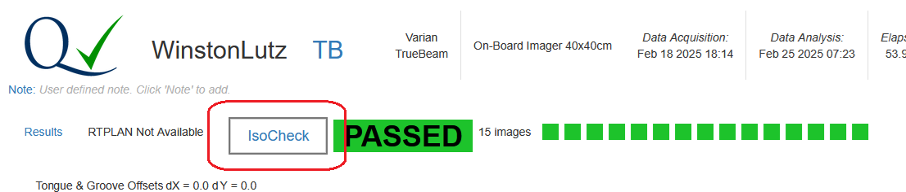
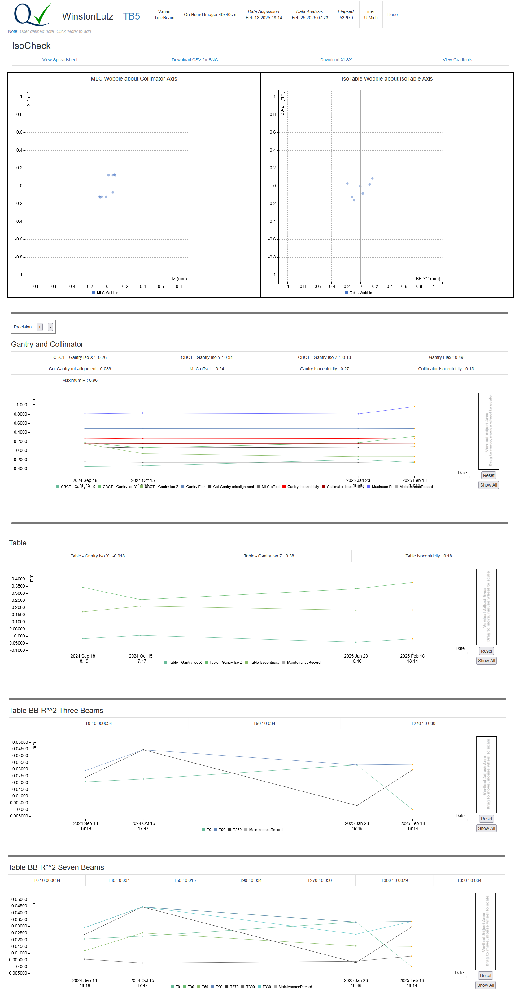
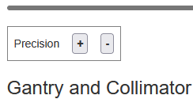

IsoCheck uses the results of conventional Winston Lutz analysis, but also quantifies the degree to which these errors can be attributed to the gantry, collimator, and table.
IsoCheck is invoked by running the Winston Lutz test. Winston Lutz processing is performed on all images, but if the set of required images for IsoCheck are present, then IsoCheck processing is performed as well.
IsoCheck result will appear the same as the usual Winston Lutz results but also have the additional IsoCheck link shown below:

The IsoCheck main page gives an overview of the results, and, trend charts (scroll down) showing a history for the machine. Table information will not be shown if the beams are not available. The main components are:

Note that the Precision device allows the user to show more or less precise values.

IsoCheck was originally implemented as an Excel spreadsheet, and this web implementation mimics the layout of that. The spreadsheet format allows the user to explore other intermediate values beside the final results.
Clicking this will download a CSV file suitable for import into the SNC SunCHECK product. The contents are the same as the first sheet of the online spreadsheet.
The user may download an XLSX version of the data which will have exactly the same values as the HTML version. The main reasons for doing so are:
This is an experimental feature that gives a visual representation of all the gradient descents. One reason for showing this is to help determine if there is more than one local minima, however other uses may be found in the future.
Clicking the Download XLSX link will download an Excel XLSX spreadsheet with the raw data already inserted. When first viewing this, the calculated values will be invalid. This is because, while the program can put values into an Excel spreadsheet, it can not execute the formulas. To view the results:
Sometimes Excel fails to properly process the spreadsheet. A workaround is to:
Note that the spreadsheet has two instances of the Excel Solver, which implements gradient descent to optimize:
The AQA software has the equivalent, however yields slightly different (usually slightly better) results. Therefore, if you choose to invoke the Excel's solver, many values will be slightly different.
There are three possible models (different sets of beams) to satisfy the requirements for IsoCheck:
When a data set is submitted, the software will first try to satisfy the requirements of the 15 beam set. If that fails, it will try for 11 beam. If that fails, it will try for 9 beams. If 9 beams fails, then no IsoCheck analysis is done.
If extra beams are uploaded that are not required, they might be analyzed by Winston Lutz, but IsoCheck will silently ignore them. For example, if a beam with Gantry:0, Collimator:0, and Table:0 were uploaded, then IsoCheck would ignore it. Also, if there is more than one beam with the same characteristics, then the most recently delivered one will be used.
The order that the beams are uploaded does not matter. Also, the beams' names in the RTPLAN do not matter. The beams are classified using the following DICOM tags:
| IsoCheck Name | DICOM Metadata Hex | DICOM Metadata Name |
|---|---|---|
| Gantry | 300A,011E | Gantry Angle |
| Collimator | 300a,0120 | Beam Limiting Device Angle |
| Table | 300a,0122 | Patient Support Angle |
Note that Patient Support Angle is often referred to as Table Angle, and that the negative of the original value is often used, but still referred to as Table Angle. For example, 30 degrees becomes 330 degrees.
The following tables list which sets of beams are required for the three different IsoCheck models.
| Gantry Angle | Collimator Angle | Table Angle | 15 Beams | 11 Beams | 9 Beams |
|---|---|---|---|---|---|
| 0 | 90 | 0 | ✅ | ✅ | ✅ |
| 0 | 270 | 0 | ✅ | ✅ | ✅ |
| 90 | 90 | 0 | ✅ | ✅ | ✅ |
| 90 | 270 | 0 | ✅ | ✅ | ✅ |
| 180 | 0 | 0 | ✅ | ✅ | ✅ |
| 180 | 90 | 0 | ✅ | ✅ | ✅ |
| 180 | 270 | 0 | ✅ | ✅ | ✅ |
| 270 | 90 | 0 | ✅ | ✅ | ✅ |
| 270 | 270 | 0 | ✅ | ✅ | ✅ |
| 180 | 270 | 30 | ✅ | ||
| 180 | 270 | 60 | ✅ | ||
| 180 | 270 | 90 | ✅ | ✅ | |
| 180 | 270 | 270 | ✅ | ✅ | |
| 180 | 270 | 300 | ✅ | ||
| 180 | 270 | 330 | ✅ |
The data in the bulk download (Download on the home page) contains almost 200 values and can be difficult to
navigate. As an aid, all the columns that reference spreadsheet cells have that reference in their description.
It can be expedient to search the IsoCheck CSV Definitions page for a desired cell, as in:
=Analysis!R12
{kind=link}
{kind=link}